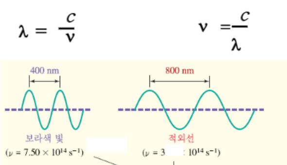
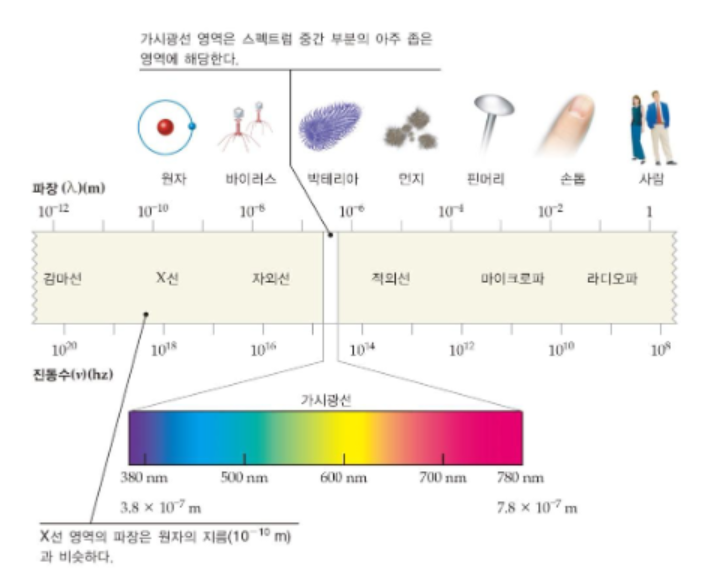
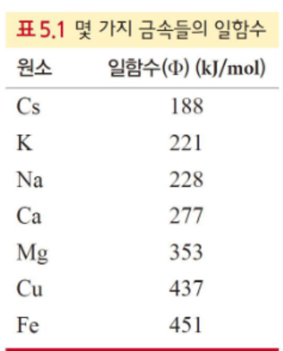
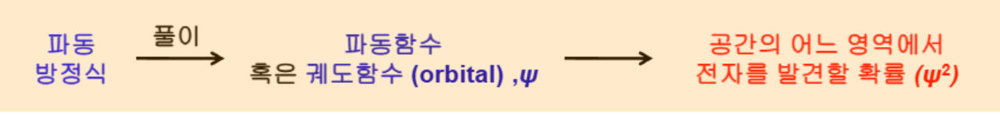
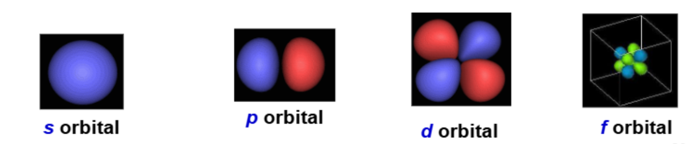
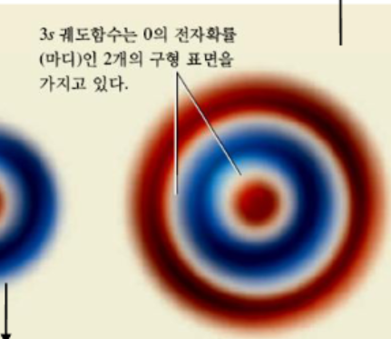
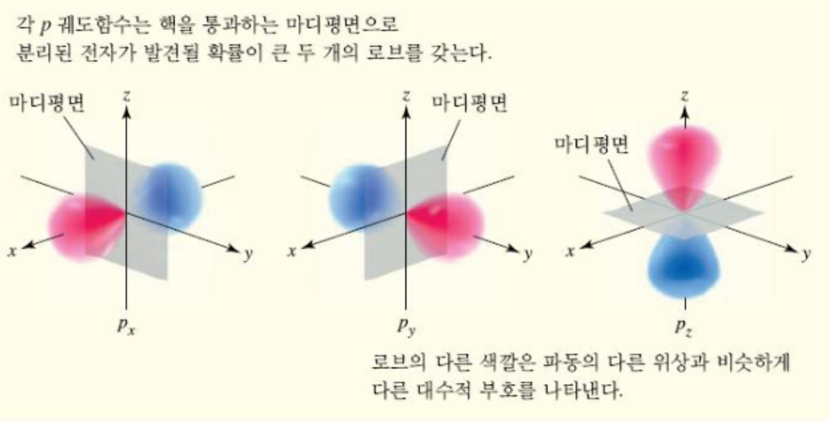
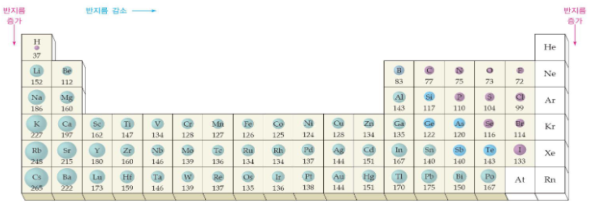

graph LR
G["바닥 상태<br/>(ground state)"] -->|"에너지 흡수"| E["들뜬 상태<br/>(excited state)"]
E -->|"ΔE = hν 방출"| G
E -.->|"n→1 라이만(자외선)"| UV
E -.->|"n→2 발머(가시광선)"| VIS
E -.->|"n→3 파셴(적외선)"| IR
Ch. 5 주기성과 원자의 전자 구조
chemistry
- 왜 원자 구조를 알아내는 데 빛(복사 에너지) 을 이용하는가?
- 원자가 선 스펙트럼 (line spectrum) 을 내놓는 이유는 무엇인가?
- 전자의 위치를 4가지 양자수 (quantum numbers) 로 어떻게 표현하는가?
- 다전자 원자에서 같은 껍질인데도 오비탈 에너지가 갈리는 이유는?
- 원자 반지름은 주기율표에서 어떻게 변하는가?
시험 비중: 5장에서 약 10점. 전자배치(electron configuration) 와 원자 반지름 비교 가 핵심이고, 5장 전자배치를 알아야 6·7장으로 갈 수 있다. 앞부분(양자 도입)은 흐름 위주로 이해.
1. 빛의 파동성과 전자기 스펙트럼
파장 / 진동수
\(c = \lambda \nu\)
금속 원소를 태우면 원소마다 고유한 불꽃 색이 나온다(불꽃놀이의 원리). 이는 빛이 원자 구조의 단서를 준다는 뜻 → 분광학 (spectroscopy) 의 출발점.
빛(전자기파, electromagnetic wave)은 파동(wave) 으로 전달된다.

- 파장 (wavelength) \(\lambda\): 마루에서 마루까지 거리. 가시광선은 약 380~780 nm.
- 진동수 (frequency) \(\nu\): 1초당 사이클 수(Hz).
- 관계식: \(c = \lambda \nu\) (\(c\) = 빛의 속도).
PDF / 실험 연결
실험에서 사용한 UV(자외선)는 254 nm 로 가시광선(380~780 nm)보다 짧다. 유기물질이 UV를 흡수해 색을 띠므로 TLC 판 등에서 눈에 보이게 하는 데 쓴다 (실험 시험 포인트).

2. 빛의 입자성: 광전 효과와 플랑크 가설
광전 효과
\(E = h\nu = \dfrac{hc}{\lambda}\)
광전 효과 (photoelectric effect): 금속판에 빛을 쪼이면 전자가 튀어나온다. 단, 빛의 진동수가 금속별 일함수 (work function) 에 해당하는 한계값 이상이어야 한다.

아인슈타인의 설명 — 파동성만으로는 안 되고 빛의 입자성 이 필요하다. 빛은 광자 (photon) 라는 작은 에너지 덩어리의 흐름.
플랑크 가설: \(E = h\nu = \dfrac{hc}{\lambda}\) (\(h\) = 플랑크 상수 \(6.626\times10^{-34}\,\text{J·s}\))
- 에너지와 파장은 반비례: 파장이 짧으면(진동수 큼) 고에너지, 파장이 길면 저에너지.
PDF 예제 5.3
리튬의 일함수 \(\Phi = 283\,\text{kJ/mol}\) 일 때 전자 방출에 필요한 진동수:
- 광자 1개당 에너지(\(E\))로 환산
- \(Φ * (\frac{1\text{mol}}{6.022 \times 10^{23}})\) (J, KJ 단위 환산 주의)
- \(\nu = E/h\) 로 계산.
3. 선 스펙트럼과 보어 원자 모형
line spectrum
에너지 준위 = 양자화
- 백색광이 프리즘을 지나면 무지개색의 연속 스펙트럼 (continuous spectrum).
- 그러나 수소 기체를 가열·방전시켜 나온 빛은 선 스펙트럼 (line spectrum) — 몇 개의 특정 파장만 나타남. 원소마다 달라 “원자 지문”(지문보다 확실한 홍채에 비유) 역할.
보어 (Bohr) 모형: 전자가 핵 주위의 특정 에너지 준위(껍질, shell) 를 돈다(태양계 비유). 에너지가 양자화 (quantized) 되어 있다.
- 원자에 에너지를 주면 전자가 낮은 준위 → 높은 준위로 들뜬다(excited). 중간값은 불가, 정해진 준위로만 점프.
- 불안정한 들뜬 전자는 두 준위의 에너지 차 \(\Delta E = h\nu\) 를 빛으로 방출하며 내려온다 → 특정 파장만 방출 → 선 스펙트럼.
부연 설명 — 양자화의 직관
양자화는 “연속처럼 들리지만 실제로는 불연속” 인 개념. 비탈길을 굴러내리는 공(연속)과 달리, 계단을 단계별로 내려가는 공에 비유된다. 피아노가 “양자화된 음”을 내는 악기 — 듣기엔 끊김 없이 들려도 연주자는 정해진 건반(불연속)만 누른다.
방출 스펙트럼 계열 (라이만 · 발머 · 파셴): 수소 전자가 어느 준위로 떨어지느냐(도착 준위) 에 따라 방출되는 빛의 파장이 갈리며, 이를 묶어 부르는 이름이다.
- 라이만(Lyman) — 도착 \(n=1\), 자외선(UV). 에너지 차 큼 → 파장 짧음
- 발머(Balmer) — 도착 \(n=2\), 가시광선(VIS). 눈에 보이는 수소 스펙트럼선
- 파셴(Paschen) — 도착 \(n=3\), 적외선(IR). 에너지 차 작음 → 파장 김
- 전자는 어느 준위로든 오르거나 내릴 수 있고, 도착 준위가 낮을수록 에너지 차가 커지고 파장은 짧아진다.
자주 헷갈리는 점
- 수소 전용: 이 이름·공식(리드베리 식)은 전자가 1개인 수소(및 He⁺·Li²⁺ 같은 수소꼴 이온)에만 깔끔히 적용된다.
- n=2, 3은 종착지가 아니라 중간 기착지: 전자는 한 번에 \(n=1\)로 안 떨어져도 된다. 예) \(n=4 \to n=2\)(발머 방출) \(\to n=1\)(라이만 방출)처럼 계단식으로 내려오며 매 단계 빛을 낸다. “발머 계열”은 이번 점프의 도착지가 \(n=2\) 라는 뜻일 뿐.
- 출발점은 고정이 아님: 올라간 높이는 흡수한 에너지로 정해지고(정해진 준위 중 하나), 떨어지는 경로도 확률적으로 여러 갈래다. 그래서 수많은 원자의 모든 점프가 합쳐져 여러 선이 한꺼번에 관찰된다.
4. 물질파와 양자역학 모형
de Broglie / 불확정성
전자도 파동성을 가짐
- 드브로이 (de Broglie) 물질파: 빛이 물질처럼 행동한다면 물질도 빛처럼 파동성을 가진다. 질량이 큰 물체는 못 느끼지만, 질량이 극히 작은 전자는 파동으로 잘 설명된다(야구공도 미세하게 파동이나 감지 불가).
- 하이젠베르크 (Heisenberg) 불확정성 원리: 전자의 위치와 운동량을 동시에 정확히 아는 것은 불가능하다. 즉 전자는 보어 모형처럼 궤도를 “도는” 게 아니다.
- 슈뢰딩거 (Schrödinger) 양자역학 모형(1926): 전자를 파동으로 보고 파동방정식 (wave equation) 을 세움.
- 해(解) = 파동함수 / 궤도함수 (orbital) \(\psi\).
- \(\psi^2\) = 핵 주위 특정 공간에서 전자를 발견할 확률. 전자는 “도는” 게 아니라 어떤 공간에 확률적으로 존재한다.

5. 4가지 양자수 (Quantum Numbers)와 오비탈
양자수 세트
\((n, l, m_l, m_s)\) = 전자 1개 표현
파동함수의 해는 4가지 양자수로 특징지어지며, 양자수 세트 \((n, l, m_l, m_s)\) 하나가 전자 1개를 표현한다. (원자번호 50번 → 전자 50개 → 양자수 세트 50개)
| 양자수 | 의미 | 값 |
|---|---|---|
| 주양자수 \(n\) | 껍질(shell), 크기·에너지 준위 | \(1, 2, 3, \dots\) (\(n\)=1 K, 2 L, 3 M, 4 N…) |
| 각운동량 \(l\) | 부껍질(subshell), 오비탈 모양 | \(0 \sim n-1\) |
| 자기양자수 \(m_l\) | 공간 방향(배향) | \(-l \sim +l\) (\(2l+1\)개) |
| 스핀양자수 \(m_s\) | 전자 회전 방향 | \(+\tfrac12(\uparrow),\ -\tfrac12(\downarrow)\) |

- 각 오비탈(공간 1개)에는 전자가 최대 2개 → s: 2개, p: 6개, d: 10개.
- \(m_s\)는 다른 세 양자수와 독립적. 한 오비탈에 전자 2개가 들어가면 반드시 반대 스핀(\(\uparrow\downarrow\)) — 같은 방향이면 자기적으로 반발.
예) 4p = \(n=4,\ l=1,\ m_l \in \{-1,0,+1\}\) → 부껍질 속 오비탈 수 3개, 껍질 속 오비탈 수 (1 + 3)개, 전자 최대 6개.
PDF 자료 연결 (5.7 오비탈 모양)


- s는 방향성 없는 구형(껍질이 커지면 구형마디 증가: 2s에 1개, 3s에 2개의 구형 마디).
- p는 핵을 지나는 마디 평면으로 갈린 아령형으로 \(n=2\)부터, d는 \(n=3\)부터 존재.
6. 다전자 원자: 유효 핵전하와 에너지 준위
유효 핵전하 \(Z_{eff}\)
가림 효과로 갈리는 오비탈 에너지
- 수소: 같은 껍질의 모든 오비탈 에너지가 동일.
- 다전자 원자: 같은 껍질이라도 s, p, d 에너지가 갈리고, 심지어 껍질을 넘나들며 교차한다 (예: 3d > 4s).
원인은 유효 핵전하 (effective nuclear charge, \(Z_{eff}\)). 바깥 전자는 안쪽 전자에 의해 핵전하가 가려져(shielding) 실제 \(Z\)보다 작은 전하를 느낀다.
- 비유: 교실에서 강사(핵, +50)가 보내는 전하를 앞줄(안쪽 전자)은 강하게, 뒷줄(바깥 전자)은 앞사람에 가려 약하게 느낀다.
- 2s는 구형이라 핵 근처 확률밀도(침투, penetration)가 커서 \(Z_{eff}\)가 큼 → 2p보다 안정(낮은 에너지).
- 안쪽 껍질에 있는 전자일수록 안정(낮은 에너지 상태)
부연 설명 — 왜 4s < 3d 인가
4s 오비탈은 핵 가까이 더 깊이 침투(penetration) 하여 안쪽 전자의 가림을 덜 받고 더 큰 \(Z_{eff}\)를 느낀다. 그래서 바닥 상태에서 4s가 3d보다 에너지가 낮아 먼저 채워진다. 단, 3d가 채워지기 시작하면 전자–전자 반발 등으로 순서 효과가 바뀌어 전이금속에서는 4s 전자가 먼저 이온화된다. 출처: The Order of Filling 3d and 4s — Chemistry LibreTexts
7. 전자 배치 (Electron Configuration)
세 가지 규칙
쌓음 · 파울리 · 훈트
세 규칙으로 전자를 채운다:
- 쌓음 원리 (Aufbau): 낮은 에너지 오비탈부터. 순서: \[1s \to 2s \to 2p \to 3s \to 3p \to 4s \to 3d \to 4p \to 5s \to 4d \to \cdots\]
- 파울리 배타 원리 (Pauli exclusion): 한 원자에서 두 전자가 4가지 양자수를 모두 같게 가질 수 없다 → 한 오비탈의 두 전자는 반드시 반대 스핀(\(\uparrow\downarrow\)).
- 훈트 규칙 (Hund’s rule): 같은 에너지(축퇴, degenerate) 오비탈이 여러 개면, 먼저 하나씩 같은 스핀으로 채운 뒤 쌍을 이룬다.
부연 설명 — 훈트 규칙의 직관
지하철·버스 빈자리에 사람들이 붙어 앉지 않고 하나씩 떨어져 앉는 것과 같다. 전자 간 반발 때문에 따로 차지하는 편이 더 안정하다.
- 표기법: \(n\) + 오비탈 종류 + 전자 수(위 첨자). 예) \(5d^3\) = 주양자수 5의 d 오비탈에 전자 3개.
- 예: \(\text{Li}: 1s^2 2s^1\), \(\text{O}: 1s^2 2s^2 2p^4\), \(\text{Na}: 1s^2 2s^2 2p^6 3s^1\).
- 약식 전자 배치: [He] 2s¹, [Ne] 3s¹ 처럼, 이전 주기까지의 전자배치를 괄호로 줄여 쓸 수 있다.
- 원자가전자: 가장 바깥 껍질의 전자. 예) O는 2s² 2p⁴ → 원자가전자 6개.
- 홀전자 (unpaired electron) 가 하나라도 있으면 상자기성 (paramagnetic, 자석에 끌림), 없으면 반자기성 (diamagnetic). (예: F는 홀전자 1개 → 상자기성, Mg는 0개 → 반자기성)
- 전이금속(Cr, Cu 등)은 예외적 배치가 많다 — 외울 필요는 없고 예외가 있다는 것만 알면 됨.
- 주기 번호 = 채워지는 껍질 수. → 20번까지 전자배치를 쓸 수 있어야 함.
8. 주기적 성질: 원자 반지름
원자 반지름
핵~최외각 전자 거리
원자 반지름 (atomic radius): 핵에서 가장 바깥 껍질 전자까지의 거리 (공유 결합에서는 핵간 거리의 \(\tfrac12\)).
- 족(세로, 위→아래): 내려갈수록 껍질 수가 늘어 반지름 증가.
- 주기(가로, 왼쪽→오른쪽): 껍질 수는 그대로지만 양성자·전자 수가 늘어 핵의 인력이 강해짐 → 반지름 감소. (예: H는 +1↔︎−1, Cl은 +17↔︎−17로 더 강하게 당겨 작아짐)

연습: Mg vs Ba(→ Ba가 큼), 같은 성질끼리 s, p, f 크기 비교 등은 주기율표만 있으면 판단 가능.
개념 연결
- 빛(양자화)→보어→양자역학 의 역사 흐름이 결국 4가지 양자수와 전자배치 로 수렴한다. 앞부분은 전자배치를 위한 서론.
- 전자배치 → 주기적 성질(원자 반지름, 6·7장의 이온화 에너지·결합) 로 직결. 5장 전자배치가 이후 단원의 토대.
- 유효 핵전하 개념은 원자 반지름의 주기 경향(왼→오 감소)과 오비탈 에너지 순서(4s<3d)를 모두 설명하는 공통 열쇠.
- 빛은 파동성(광전 효과 전까지)과 입자성(광자, \(E=h\nu\))을 모두 가지며, 원자 구조 탐구의 도구다.
- 원자의 에너지 준위는 양자화되어 있어, 들뜬 전자가 \(\Delta E=h\nu\)를 방출하며 선 스펙트럼을 만든다(원자 지문).
- 슈뢰딩거 모형에서 전자는 확률적으로 존재(\(\psi^2\))하며, 4가지 양자수 \((n,l,m_l,m_s)\) 세트 하나가 전자 1개를 나타낸다.
- 다전자 원자의 오비탈 에너지는 유효 핵전하(\(Z_{eff}\))와 침투로 갈리며(4s<3d), 전자배치는 쌓음·파울리·훈트 규칙으로 채운다.
- 홀전자 유무로 상자기성/반자기성이 갈리고, 원자 반지름은 족 아래로 증가·주기 오른쪽으로 감소한다.